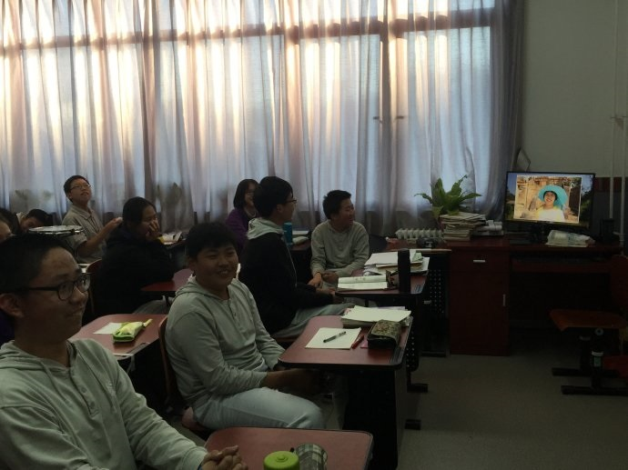
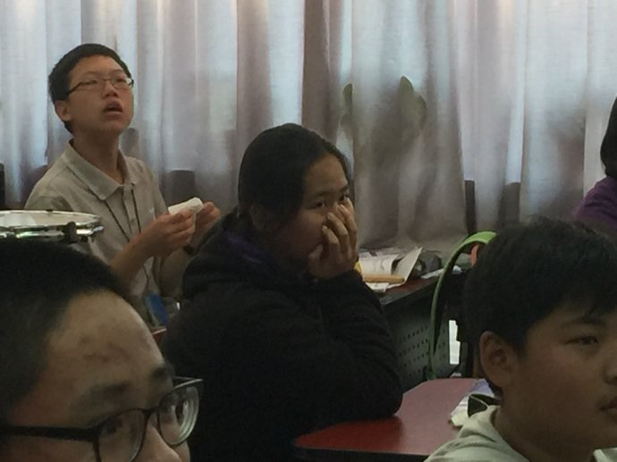

成人礼的风波
黑狼语录：
—— 不要太在乎他人眼中的自己，一般情况下，他并不真正地了解你，也不想真正地去了解你。
方小玉同学今年九月份刚满十四周岁，现在的她，懵懵懂懂，已经开始关注形象了。每天会仔细地梳理头发，在脸上涂抹些护肤品，随着心情穿着不同的衣服，不时地在网上寻找中意的名牌用品。经常装作满不在乎的样子，却在仔细聆听着别人的评价，琢磨着别人的眼光。
周三（11 月 1 日）下午，方小玉的班主任老师在群里发布消息，班里要在周五举办“十四岁成人礼”主题班会，希望家长能通过视频、音频等形式，给孩子一份十四岁的青春寄语，届时在班会上播放给孩子们。并且，要保密，不要在周五前透露给孩子。
这个消息，一下子让我高度重视起来。想到方小玉在班会上能和同学们一起观看我精心制作的青春寄语，我很兴奋。以前，我在网上兴奋地写完一篇博文，只要内容中涉及到她，她都会严肃地警告我不要发到她的同学群、家长群，甚至也不许我发到朋友圈。这一次，终于不受限制了，直接在班级里播放，无法回避。
立刻着手制作，思路是用照片做一个视频相册，加点文字，动画效果，再配上背景音乐。
选择用什么软件来制作短视频呢，在下载安装试用了五款软件后，最终选择用 PPT 来制作视频，整个过程再次感叹这个软件的强大。
选择照片花了很长时间，现在的方小玉处在很在乎别人看法的敏感阶段，在同学老师面前展现她的照片，形象和着装、拍照的时间、照片的题材等，都要适当考虑。她的新照片不多，且大多是搞怪的动作，最终，只选择出了 16 张照片和 2 小段视频。
边学习边制作，花了约一天的时间，完成了一段 105 秒的视频。期间，征求了胡有理同志的意见，尤其在文字措辞上，几易其稿。在选择音乐上，我和胡有理的分歧最大，她建议用古筝名曲，我则坚持天籁般的歌声。最后，我选择了周深的《大鱼》，完工后试听了一下，感觉效果不错，发送给方小玉的班主任了。
周五早上到公司刚刚一会儿，方小玉给我打来电话，她听说我交给老师一段视频，希望我主动跟老师沟通，撤回这段视频，不在班会上播放，理由是不希望同学看到她在家里的照片。
整个上午，她打了五次电话来确认我是否撤回了视频。嘴上答应着，我却没有给老师打电话，怎么会取消呢，我辛辛苦苦做的视频，还有，这么有意义的主题班会，如果没有她的节目，她应该会很失落的。
 晚上19:30，我刚一踏入家门，方小玉连珠炮一样向我攻来，搞得我措手不及、满脸诧异。
她很气愤我没有撤销这段视频，我说：“你们老师很忙，联系不上啊！”， “在班会上，有没有家长没有做成人礼寄语的，没有的同学是不是有些失望？”， “再说了，老师不是让保密的吗！”。
“哪有像你那么傻那么听话的人，好多家长在前一天都直接跟同学说了，有些同学没让做”，她嘲笑着我，想了一下说：“确实有的同学在班会后，有些沉默”。
她继续说：“别的家长们，有的发一封祝福信，有的是一段语音，有的录了一段讲话的视频，在班会里播放或者朗读的时候，有的同学很感动、热泪滚滚，气氛很感人。到了你的视频，全班都在大笑，气氛完全不一样，让我很没面子。”
我说：“你确定是没面子，而不是害羞？”
她激动地说：“害什没羞，我差点无地自容，我都趴在桌子上了！”，过了一会儿，她又说：“有的家长，录制讲话祝福的视频，坐在很漂亮的办公室，穿的衣服很隆重，而且还化了妆，很上档次。到了你的视频，我实在是受不了了，周日的课外班我不去了，下周一我也不准备上学校去了，没脸去面对，我怕他们嘲笑我。”
我说：“我特意选了好几张照片，都是你骑自行车从北京到内蒙乌兰布统的，同学们怎么可能嘲笑你呢？”
她回味着说：“你选打羽毛球的，还有骑自行车的照片，我比较满意，他们很惊讶，而且我的骑行服也是挺酷的。对了，我们确定是骑行了九天吗，我怎么觉得没有那么多天呢？”
我不确定地答道：“中间好像有一到两天的休息，总共是九天吧。”
她有点遗憾地说：“我就说嘛，肯定不到九天，我们每天骑的距离不止 50公里。”他又很生气地说：“那张我坐在大坑里的照片，同学们都大笑。我最讨厌你选的前滚翻视频，我穿着睡衣在床上练习前滚翻，太不雅观，把我在学校的形象都毁了，班里还有那么多男同学，我肯定不去上学了，受不了了！”
我说：“前滚翻是体育项目，跟打羽毛球、骑自行车都是一个主题，表现的是你突破自我。”，我又接着说：“我选择的背景音乐，是不是很好听？”
她说：“我没有听过，有同学知道那首歌是《大鱼》”。
她的愤怒，持续了至少 20 分钟。
周一（11 月 6 日），吃晚饭的时候，我问她：“有没有同学还继续关注你的那些照片和视频？”，她说：“今天没有人说这个话题了，但他们肯定心里还记得”。
我说：“鱼的记忆只有 7 秒，你们同学的记忆最多是 1 个小时。你在乎的，别人不一定在乎，不要太在意别人对你的看法，很多事情，都是你想象臆测出来的，实际上根本不会出现。”
题外话：
—— 成人礼之后，方小玉听到《大鱼》的曲调会立即暴走远去，听到“成人礼”三个字会大喊大叫马上制止继续说下去。
—— 始终没有弄明白方小玉愤怒的原因，也许她只是单纯地想让人感受到她的存在吧。